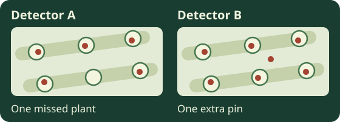

Detector benchmark
The generator knows where each plant grows. Test which detector finds those plants and how often it places a stray pin.
How the test works

Each seed grows six fields for training and three fresh fields for scoring. Each comparison uses the same held-out plantings with and without soil. The scan-layout question rescans those plantings from two ray patterns. A second seed repeats the test on new plantings.
Try another experiment
Benchmark live
- Grow
- Train
- Score
Mean F1 by seed
| Contender |
|---|
Select a score to view that detector’s pins on the first field for its seed.
Results
Four detectors on the same field scans
Compare the two scales within one row to keep its training examples fixed. Each scale uses the average and spread of its own training sample for all 13 measurements.
The green bars show the share of plants found within 15 cm on the three scans with soil.
Which examples did they practice on?
Each difficult example was a background peak that the practice model scored highly. Its distance from a planted center determines which group it can fill. The test scans contribute no training rows.
Try saved weights in Field Test → Read the tomato experiment
Run a comparison to see timing, precision, recall and F1 for both seeds.
| Seed | Contender | Epochs | Cutoff | Generation | Training | Scoring | Training loss | Mean F1 | Precision / recall at 15 cm |
|---|
Take a detector back to the field
Time to choose difficult examples
- Fit practice model
- Score background peaks
- Rank and choose peaks
- Rebuild the difficult training set
The rebuild includes scoring and ranking. The ordinary draw can train directly from shuffled examples.
Training plots included weeds. The fresh scoring plots use the generator’s usual mix of weeds, debris and scan noise. Read the tomato study →
The practice model scored these peaks before either final fit. A score near 1 means the model strongly favored a crop.
| Practice score | Shuffled | Half difficult |
|---|
How to read timings and scores
Generation time covers the training and validation fields. Rows that share a dataset also share its generation time. The density and peak-height comparisons build a separate set of training examples for each fit. For the difficult-background comparison, generation includes preparing the training rows. The JSON receipt gives separate times for fitting the practice model, scoring the background pool, ranking it and rebuilding the difficult sample. Generation excludes the scoring and ranking times. Each fitting time covers a final model starting from its original weights. The cutoff experiment fits once per seed and shares that training time across its cutoff rows. In a two-cutoff run, the second row for each seed shows “Reused”. The layout experiment fits once per seed. Its second generation time covers only rescanning the validation fields, and “Reused” means it kept the first fit. Training time includes model initialization, GPU setup and readback where applicable. Training loss is the cross-entropy measured before the last weight update. Mean F1 averages the three held-out F1 scores at 7.5, 10 and 15 cm.
Do lower peaks become detections?
Each seed has three held-out plantings. This table uses the soil-present scan of each. Both match columns count one pin per plant within 15 cm. Extra pins are final detections left over after matching.
| Seed | Min. height | Labeled plants | Height peaks | Matched using all peaks | Final matches | Extra pins |
|---|
Which plants did each model find?
Each labeled plant can match one final pin within the selected distance. Pick a plant matched by just one fit to inspect its center in 3D.
| Both fits | Logistic only | Neural only | Missed by both |
|---|---|---|---|
How much training data did each fit see?
Scanner capacity can cap the rays sampled per scan. The training examples are balanced candidate peaks from both soil variants. All fits at each seed used the same validation tiles.
The alternating fit uses three plantings at 12,000 rays and three at 60,000 rays. Each planting keeps its budget across both soil scans.
| Seed | Rays requested per scan | Rays sampled per training scan | Training examples | Mean F1 |
|---|
How well did each fit handle both densities?
Each row combines this run with the most recent run at the other budget in this tab, using the same fit settings and plantings. Each F1 averages the three matching distances across both soil settings. The last column gives the lower of the two values. Ray counts are requested budgets. Some layouts cap the number sampled.
| Seed | Training rays | F1 at 12k rays | F1 at 60k rays | Lower F1 |
|---|
What changes from the 0.50 cutoff?
This table pools both scans of each planting. Compare each cutoff with 0.50. A positive number means more plants matched or more extra pins appeared.
| Seed | Cutoff | Change in matched plants | Change in extra pins |
|---|
Which plants get a matching pin?
Each column shows how many labeled plants received a matching pin. The bars show the fraction matched within each group. This table counts each planting once, with soil present. Extra pins are counted across the same scans.
| Crop returns per plant | Plants |
|---|
Which examples reached the fit?
| Plant group | Available | Shuffled | Balanced |
|---|
Scores at each matching distance
| Seed | Contender | Epochs | Cutoff | Tolerance | Precision | Recall | F1 | Matched | Extra pins | Missed plants |
|---|
Compare contenders on each planting
Each row combines the scans with and without soil from one held-out planting. Select a field seed to inspect its soil-present scan in 3D.
Use the training shed for individual runs, custom workloads, loss curves, weights and field-by-field overlays.